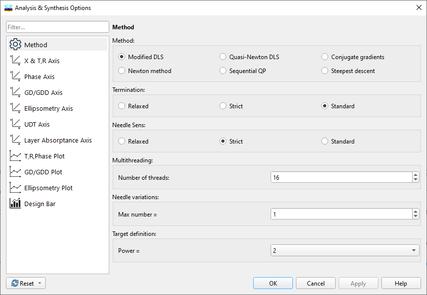

Optimization methods and Needle options
Selecting Optimization Method and Needle Options
Navigation: OptiLayer Menu Commands > Synthesis Menu > Analysis and Synthesis Options >
Selecting Optimization Method and Needle Options
` <idh_synthesis_options.html>`__ ` <idh_synthesis_options.html>`__ ` <idh_synthesis_options_axes.html>`__
The Synthesis Options is accessible via the Options command in the Synthesis menu. Access to this window is also available during the refinement process by clicking the Options button at the bottom of the Refinement window. The Method page allows the user to choose one of the optimization methods available in OptiLayer, even during the refinement process. The optimization method can be changed.

Optimization methods
The Hyper Newton method is a modification of the Newton method based on ideas from the Damped Least Squares method. It requires significant computer memory but offers fast convergence.
The Modified Damped Least Squares (Modified DLS) method is powerful, providing rapid convergence at the early stages of refinement but may slow down towards the end, particularly in complex designs with many layers.
The Newton method is a 2nd order optimization approach that employs full analytic second-order derivatives of the merit function. It is well-suited for problems with a large number of optimization parameters and poor convergence of the merit function. While Newton’s second-order method is one of the most potent optimization techniques, it may not converge rapidly at the initial stages but is often a good choice towards the end of the refinement process.
The Quasi-Newton DLS method utilizes full information on partial Jacobian matrices for a merit function that is a sum of squares, offering fast convergence but may not be suitable for problems with qualifiers in targets.
The Sequential QP method is founded on sequential approximations of the optimization problem through Quadratic Programming (QP) problems, providing good convergence and recommended for complex problems.
Two other methods are historically the first used for optical coatings design. They are primarily useful for educational purposes.
The Conjugate Gradients method is well-known and widely used, stable, and typically converges faster than the Steepest Descent method.
The Steepest Descent method is the simplest and historically the first applied to optimization problems, however, it converges slower compared to other methods.
Termination
This field allows the user to select termination criteria used in optimization procedures.
The Relaxed option can expedite computations by causing early termination of the optimization procedure when there is modest potential for improvement in the merit function from iteration to iteration.
The Standard option is the default termination criteria.
The Strict option is recommended for complicated problems where high-quality design is crucial, albeit it may increase computational time as optimization stops only when the potential for improvement in the merit function from iteration to iteration is minimal as measured by the normal gradient of the merit function.
Needle variations
The Needle Sensitivity field controls how early Needle variations will be terminated. The settings are similar to the termination criteria of optimization procedures. In cases where too many thin layers are inserted during the course of the Needle Optimization or Gradual Evolution procedures without a significant improvement in merit function values, the level of Needle Sensitivity can be decreased using this option. In many cases, this prevents the insertion of too many thin layers and improves computational speed. It is possible to use more than one needle variation at each iteration of the Needle Optimization procedure. Selecting multiple needle variations can, in some cases, improve the convergence of this procedure. The optimal number of simultaneously performed needle variations is specific to each problem and should be determined experimentally. Pressing the Default button restores the initial settings of the optimization method, termination criteria, and the number of simultaneous needle variations.
Power
Integer power is used in determining the merit function expression. The default and most suitable value for most cases is 2. It can be selected from the list of values: 1, 2, 4, 6, 8, 12, 16. With higher values of the power, the merit function behavior becomes more unfavorable from an optimization perspective.
Notes:

Power = 1 should only be used with targets having extreme values. For instance, transmittance or reflectance with values of 0% and 100% without intermediate points. In other cases, the optimization convergence may be very poor.

The Hyper-Newton method only works with Power = 2 and targets without qualifiers.
Symmetric Design mode
The Symmetric Design mode restricts all designs to symmetrical configurations with respect to the design center. This configuration is particularly useful for immersed coatings, especially when only half of a coating is applied to multiple substrates, and these coated substrates are later connected with optical glue after production. See also: